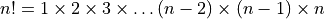
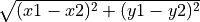

Lezione 12 - Python: Funzioni¶
Le funzioni sono blocchi di codice a cui associamo un nome.
Per definire una nuova funzione, scrivo:
def nome_funzione(argomento_1, argomento_2, ...):
# qui metto il codice che usa argomento_1, argomento_2,
# etc. per calcolare il valore della variabile risultato
return risultato
Una volta definita la funzione, la posso chiamare/invocare dal resto del codice, cosi’:
valore_ritornato = nome_funzione(valore_1, valore_2, ...)
# qui uso valore_ritornato
Esempio. Definisco una funzione che prende due argomenti (che chiamo
arbitrariamente numero1 e numero2) e ne stampa la somma:
def stampa_somma(numero1, numero2):
print("la somma e'", numero1 + numero2)
che uso cosi’:
# stampa: la somma e' 10
stampa_somma(4, 6)
# stampa: la somma e' 17
stampa_somma(5, 12)
# stampa: la somma e' 20
stampa_somma(19, 1)
Il codice qui sopra e’ del tutto equivalente a questo:
numero1 = 4
numero2 = 6
print("la somma e'", numero1 + numero2)
numero1 = 5
numero2 = 12
print("la somma e'", numero1 + numero2)
numero1 = 19
numero2 = 1
print("la somma e'", numero1 + numero2)
Warning
In stampa_somma() non c’e’ un return. Quando manca il return,
il risultato della funzione e’ sempre None:
risultato = stampa_somma(19, 1) # stampa: la somma e' 20
print(risultato) # stampa: None
Esempio. Riscrivo la funzione stampa_somma(), che stampava la somma
dei suoi argomenti, in modo che invece restituisca (con return) la
somma come risultato:
def calcola_somma(numero1, numero2):
return numero1 + numero2
Quando la chiamo succede questo:
# non stampa niente
calcola_somma(4, 6)
# non stampa niente
calcola_somma(5, 12)
# non stampa niente
calcola_somma(19, 1)
Perche’? Proviamo a riscrivere quest’ultimo codice per esteso:
numero1 = 4
numero2 = 6
numero1 + numero2
numero1 = 5
numero2 = 12
numero1 + numero2
numero1 = 19
numero2 = 1
numero1 + numero2
Qui e’ vero che effettivamente calcolo le varie somme, ma e’ anche vero
che non le stampo mai: non c’e’ nessun print!
Quello che devo fare e’ mettere il risultato di calcola_somma() in una
variabile, e poi stamparlo a parte, cosi’:
# non stampa niente
risultato = calcola_somma(19, 1)
# stampa 20
print(risultato)
(Oppure, abbreviando: print(calcola_somma(19, 1))). Scritto per esteso,
questo codice e’ equivalente a:
numero1 = 19
numero2 = 1
risultato = numero1 + numero2
print(risultato)
Ora tutto torna: faccio la somma e ne stampo il risultato.
Warning
Il codice “contenuto” in una funzione non fa niente finche’ la funzione non viene chiamata!
Se scrivo un modulo esempio.py con questo codice:
def funzione():
print("sto eseguendo la funzione!")
e lo eseguo:
python3 esempio.py
Python non stampera’ niente, perche’ la funzione non viene mai chiamata.
Se voglio che venga eseguita, devo modificare il modulo esempio.py cosi’:
def funzione():
print("sto eseguendo la funzione!")
funzione() # <-- qui chiamo la funzione
Quano lo eseguo:
python3 esempio.py
Python trova la chiamata alla funzione (l’ultima riga del modulo) ed esegue la funzione: di conseguenza, stampera’:
sto eseguendo la funzione!
Esempio. Creo una funzione fattoriale() che prende un intero n
e ne calcola il fattoriale , definito cosi’:

So farlo senza una funzione? Certo. Assumiamo di avere gia’ la variabile n.
Scrivo:
fattoriale = 1
for k in range(1, n + 1):
fattoriale = fattoriale * k
Bene. Come faccio a convertire questo codice in una funzione? Semplice:
def calcola_fattoriale(n):
# n contiene il valore di cui voglio calcolare il fattoriale
# qui inserisco il codice sopra
fattoriale = 1
for k in range(1, n+1):
fattoriale = fattoriale * k
# a questo punto ho calcolato il fattoriale, e lo
# posso restituire
return fattoriale
Ora sono libero di chiamare la funzione quante volte mi pare:
print(calcola_fattoriale(1)) # 1
print(calcola_fattoriale(2)) # 2
print(calcola_fattoriale(3)) # 6
print(calcola_fattoriale(4)) # 24
print(calcola_fattoriale(5)) # 120
o anche in modi piu’ complessi:
lista = [calcola_fattoriale(n) for n in range(10)]
Warning
Il nome della funzione ed il nome degli argomenti li scegliamo noi!
Quiz. Che differenza c’e’ tra questo frammento di codice:
def calcola(somma_o_prodotto, a, b):
if somma_o_prodotto == "somma":
return a + b
elif somma_o_prodotto == "prodotto":
return a * b
else:
return 0
print(calcola("somma", 10, 10))
print(calcola("prodotto", 2, 2))
e questo?:
def f(operation, x, y):
if operation == "sum":
return x + y
elif operation == "product":
return x * y
else:
return 0
print(f("sum", 10, 10))
print(f("product", 2, 2))
Warning
Il codice della funzione non vede le variabili esterne alla funzione: vede solo gli argomenti!
Il codice della funzione puo’ restituire un risultato solo attraverso
return!
Quiz. Consideriamo questo codice:
def una_funzione(a, b):
somma = a + b
return somma
a = 1
b = 2
somma = 3
una_funzione(100, 100)
print(somma)
Cosa viene stampato a schermo?
Esempio. Definisco due funzioni:
def leggi_fasta(percorso):
righe = open(percorso).readlines()
dizionario = {}
for riga in righe:
if riga[0] == ">":
intestazione = riga
else:
sequenza = riga
dizionario[intestazione] = sequenza
return dizionario
def calcola_istogramma(sequenza):
istogramma = {}
for carattere in sequenza:
if not carattere in istogramma:
istogramma[carattere] = 1
else:
istogramma[carattere] += 1
return istogramma
Date le due funzioni, posso implementare un programma complesso che (1) legge un file fasta in un dizionario, (2) per ciascuna sequenza nel file fasta calcola l’istogramma dei nucleotidi, e (3) stampa ciascun istogramma a schermo:
dizionario_fasta = leggi_fasta(percorso)
for intestazione, sequenza in dizionario_fasta.items():
istogramma = calcola_istogramma(sequenza)
print(istogramma)
Esercizi¶
Data la funzione:
def funzione(arg): return arg
di che tipo e’ il risultato delle seguenti chiamate?
funzione(1)funzione({"1A3A": 123, "2B1F": 66})funzione([2*x for x in range(10)])funzione(2**-2)
Data la funzione:
def addizione(a, b): return a + b
di che tipo e’ il risultato delle seguenti chiamate?
addizione(2, 2)addizione([1,2,3], [True, False])addizione("sono una", "stringa")
Creare una funzione
stampa_pari_dispari()che prende un intero e stampa a schermo"pari"se il numero e’ pari e"dispari"altrimenti.Cosa succede se scrivo:
risultato = stampa_pari_dispari(99) print(risultato)
Creare una funzione
calcola_pari_dispari()che prende un intero e restituisce la stringa"pari"se il numero e’ pari e la stringa"dispari"altrimenti.Cosa succede se scrivo:
calcola_pari_dispari(99)
Creare una funzione
controlla_alfanumerico()che prende una stringa e restituisceTruese la stringa e’ alfanumerica (contiene solo caratteri alfabetici o numerici) eFalsealtrimenti.Per controllare se un carattere e’ alfanumerico, usare
ine la stringa::"ABCDEFGHIJKLMNOPQRSTUVWXYZ0123456789".Hint. Anche i caratteri minuscoli possono essere alfanumerici!
Creare una funzione
domanda()che non prende nessun argomento, chiede all’utente un percorso ad un file e stampa a schermo i contenuti del file. (Testarla ad esempio con il filedata/aatable.)Creare una funzione
wc()che prende una stringa e restituisce una tripla (tuple) di tre valori:Il primo elemento della coppia deve essere la lunghezza della stringa.
Il secondo elemento deve essere il numero di a capo nella stringa.
Il terzo elemento deve essere il numero di parole (separate da spazi o a capo) nella stringa.
Creare una funzione
stampa_dizionario()che prende un dizionario e stampa a schermo le coppie chiave-valore del dizionario formattate come da esempio sotto.Esempio: quando applico
stampa_dizionario()a:dizionario = { "arginina": 0.7, "lisina": 0.1, "cisteina": 0.1, "istidina": 0.1, }
che e’ un istogramma di frequenze, il risultato deve essere:
>>> stampa_dizionario(dizionario) istidina -> 10.0% cisteina -> 10.0% arginina -> 70.0% lisina -> 10.0%
Qui l’ordine in cui vengono stampate le righe non importa.
Come sopra, ma le chiavi devono essere ordinate alfanumericamente:
>>> stampa_dizionario_ordinato(dizionario) arginina -> 70% cisteina -> 10% istidina -> 10% lisina -> 10%
Hint: conviene estrarre le chiavi del dizionario, ordinarle a parte, scorrere le chiavi ordinate e di volta in volta stampare la riga corrispondente.
Creare una funzione
crea_lista_di_fattoriali()che prende un interon, e restituisce una lista dinelementi.L’
i-esimo elemento deve essere il fattoriale dii.Ad esempio:
>>> lista = crea_lista_di_fattoriali(5) >>> print(len(lista)) 5 # 5 elementi, come richiesto >>> print(lista[0]) 1 # e' il fattoriale di 0 >>> print(lista[1]) 1 # e' il fattoriale di 1 >>> print(lista[2]) 2 # e' il fattoriale di 2 >>> print(lista[3]) 6 # e' il fattoriale di 3 >>> print(lista[4]) 24 # e' il fattoriale di 4
Hint: conviene usare la funzione
fattoriale()definita in uno degli esempi precedenti per calcolare i valori della lista.Creare una funzione
conta_carattere()che prende due stringhe, la prima che rappresenta testo e la seconda che rappresenta un carattere.La funzione deve restituire il numero di ripetizioni del carattere nel testo.
Ad esempio:
>>> print(conta_carattere("abbaa", "a")) 3 # "a" compare 3 volte >>> print(conta_carattere("abbaa", "b")) 2 # "b" compare 2 volte >>> print(conta_carattere("abbaa", "?")) 0 # "?" non compare mai
Creare una funzione
conta_caratteri()che prende due stringhe, la prima che rappresenta testo e la seconda che rappresenta un tot di caratteri.La funzione deve restituire un dizionario, in cui le chiavi sono i caratteri da cercare, e il valore associato il loro numero di ripetizioni.
Ad esempio:
>>> print(conta_caratteri("abbaa", "ab?")) {"a": 3, "b": 2, "?": 0}
Creare una funzione
distanza()che prende due coppie(x1,y1)e(x2,y2)di punto bidimensionali e ne restituisce la distanza Euclidea.Hint. La distanza Euclidea e’ 
Creare una funzione
sottostringa()che date due stringhe ritornaTruese la seconda e’ sottostringa della prima.Creare una funzione
sottostringhe_non_vuote()che data una stringa, restituisca la lista delle sue sottostringhe non vuote.Creare una funzione
conta_sottostringhe()che, date due stringhepagliaioedago, ritorni il numero di ripetizioni diagoinpagliaio.Creare una funzione
sottostringa_piu_lunga()che date due stringhe restituisca la loro sottostringa comune piu’ lunga.Hint. Si puo’ risolvere usando l’esercizio precedente!